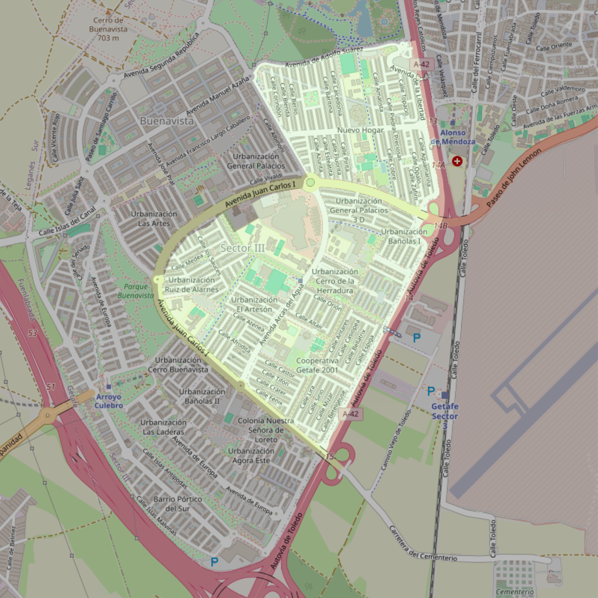

Nuestra Señora de Buenavista

- Arciprestazgo
- Getafe
- Población
- Getafe
- Dirección postal
- Avda. Arcas del Agua, 13
- Código postal
- 28905
- Extensión
- 2,37 km² (237 ha)
- Teléfono
- 916 965 246
- Correo electrónico
- nsbuenavista-getafe@diocesisgetafe.es
Límites territoriales según el decreto
"Partiendo de la confluencia de la Avda. Adolfo Suárez con la autovía Madrid-Toledo (A-42), arrancan por el eje de la autovía Madrid-Toledo (en dirección sureste); hasta la intersección con la Avda. Juan Carlos I en el km. 15; continúa por el eje de la Avda. Juan Carlos I en dirección norte hasta la rotonda donde termina la calle Fuente de Antón Merlo, desde allí continúa por la Avda. Juan Carlos I, pero excluyendo los números de dicha avenida que pertenecerán a la nueva parroquia; al llegar a la Plaza Juan Carlos I el límite continúa por el eje de la calle Arcas del Agua hasta el cruce con la Avda. Adolfo Suárez en dirección este hasta la intersección en línea imaginaria con la autovía Madrid-Toledo (A-42) punto de partida"